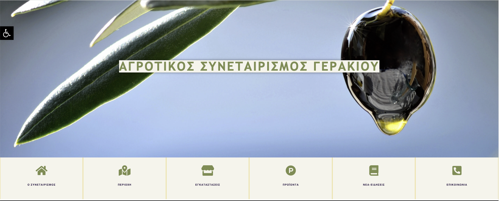
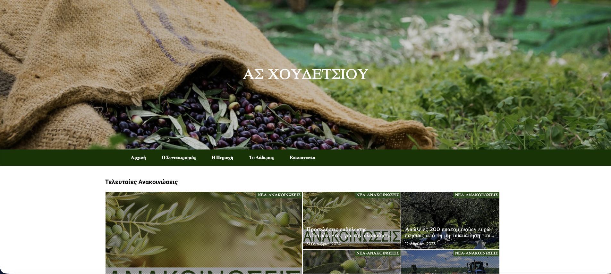
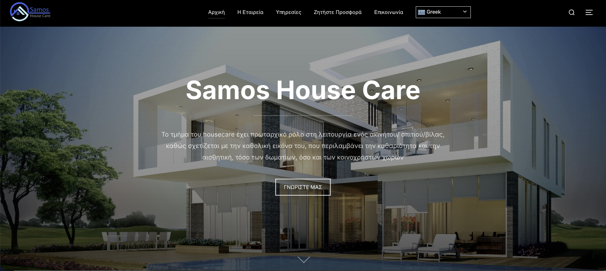
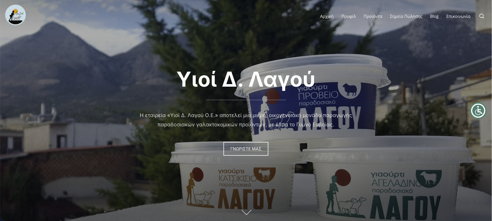
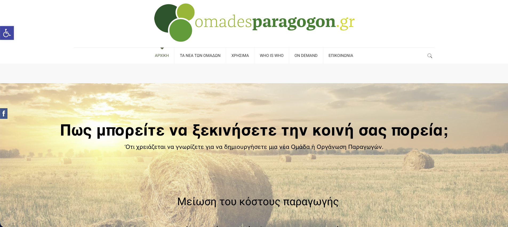
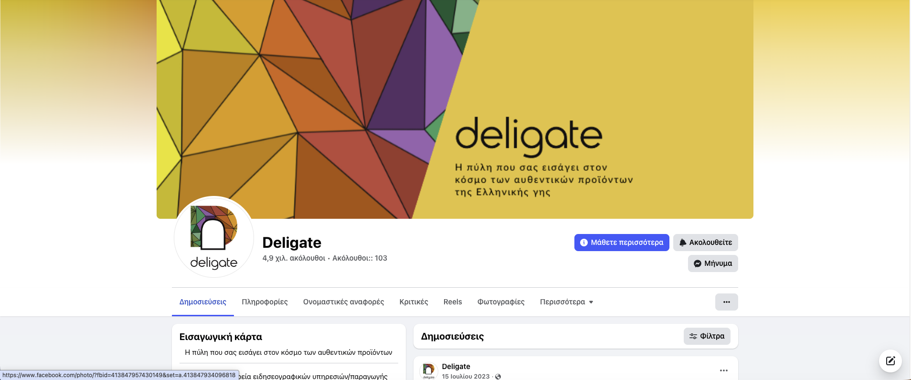

About Me
Finance and data professional with a strong background in Data Science, Financial Services, Risk and Compliance. Skilled in Python, SQL, Machine Learning, Data Analytics, Power BI and Excel, with experience applying data-driven approaches to financial and business problems. Combines academic training in Banking & Financial Management and Data Science with professional experience in compliance, financial analysis and project coordination. Focused on transforming data into actionable insights and practical solutions that support informed, data-driven decision-making.
Current Endeavors
Moneylytics — Developing an AI-powered personal finance Streamlit app for automating expense categorization, budgeting, and GPT-based insights. Incorporates ML-based forecasting of spending patterns and optimization of savings targets.
Resume
Experience
Compliance Officer Assistant – iFOREX, Athens, Greece (05/2026 – Present)
- Support compliance activities within a global financial services environment, with a focus on High-Risk Client (HRC) reviews and enhanced due diligence processes.
- Assist with Enhanced Customer Due Diligence (ECDD), Anti-Money Laundering (AML) procedures, and Source of Wealth (SoW) / Source of Funds (SoF) assessments.
- Review and organize client information and supporting documentation to support customer risk assessment and compliance decision-making.
- Collaborate with international teams and stakeholders across multiple markets, supporting consistent and efficient compliance workflows.
- Support reporting, monitoring, and documentation processes related to compliance activities and operational risk.
- Key Skills: KYC, AML, ECDD, HRC Reviews, Risk Assessment, Compliance Operations, Financial Services, Reporting.
Project Manager – iFOREX, Athens, Greece (11/2025 – 05/2026)
- Coordinated a global compliance project focused on High-Risk Clients (HRC) across multiple international markets.
- Coordinated multicultural teams and stakeholders involved in Enhanced Customer Due Diligence (ECDD), AML-related processes, and Source of Wealth (SoW) / Source of Funds (SoF) assessments.
- Monitored project execution, operational workflows, reporting requirements, and completion of assigned compliance activities.
- Maintained structured tracking and reporting processes to monitor workload, progress, and operational performance.
- Supported process improvements and workflow coordination within a global financial services environment.
- Key Skills: Project Management, Team Coordination, Stakeholder Management, Reporting, Process Monitoring, Compliance Operations.
Accountant Assistant – Athens, Greece (08/2022 – present)
- Handled financial document registration, bookkeeping, invoice processing, and VAT-related procedures using accounting software.
- Assisted with the preparation of financial statements, tax submissions, and financial documentation.
- Developed Excel-based tools and automated workflows to improve invoice tracking, expense monitoring, and reporting processes.
- Worked extensively with financial data, ensuring accuracy, consistency, and timely reporting.
- Supported financial reporting and administrative processes for business clients.
- Key Skills: Financial Analysis, Accounting, Excel, Data Accuracy, Reporting Automation, Financial Reporting.
Financial Consultant – Simbiosis Consultants, Athens (11/2021 – 07/2023)
- Prepared business plans and feasibility studies for small and medium-sized enterprises across multiple sectors.
- Supported clients in developing EU funding proposals and digital transformation strategies.
- Conducted financial analysis and developed techno-economic feasibility studies to assess business viability, investment requirements, and expected returns.
- Performed market research and supported strategic decision-making through financial and business analysis.
- Supported the digital promotion of EU-funded projects, including website development and analytics.
- Key Skills: Financial Analysis, Financial Modeling, Business Planning, Market Analysis, Strategic Consulting, Business Development.
Additional Professional Experience
- Worked in seasonal hospitality roles in Samos, Greece, developing strong interpersonal, communication, and customer-service skills.
- Developed adaptability, teamwork, and multitasking skills while working in fast-paced customer-facing environments.
Education
Master of Science (MSc) in Data Science and Society – Tilburg University (08/2024 – 06/2025)
- Focus: Data Science, Artificial Intelligence, Statistics, and Applied Analytics
- Core Courses: Statistics and Methodology, Data Mining, Machine Learning, Data Science Regulation & Law
- Research Skills: Data Processing, Advanced Data Processing, Statistical Analysis
- Electives: Deep Learning, Optimization for Data Science
- Thesis: “Forecasting Crypto Price Peaks: Regression-Based Time-Until-New-High Predictions” — Applied machine learning and regression techniques to financial time-series data to estimate the time until a cryptocurrency reaches a new price high.
Pre-Master in Data Science and Society – Tilburg University (01/2024 – 07/2024)
- Goal: Building quantitative, computational, and analytical foundations for advanced Data Science.
- Key Courses: Statistics, Calculus for Data Science, Programming and Algorithmic Thinking, Introduction to Artificial Intelligence, Research Seminar.
- Skills Gained: Statistical inference, algorithmic problem-solving, Python programming, and applied data analysis.
Bachelor (BSc) in Banking & Financial Management – University of Piraeus (10/2016 – 07/2022)
- Focus: Banking, Finance, Econometrics, Risk Management, and Quantitative Methods in Finance.
- Core Topics: Investment Theory, Portfolio Management, Risk Management, Financial Modeling, and Financial Markets.
- Team Project: “Pricing Rainbow Options” — Implemented Monte Carlo simulations with antithetic sampling and control variates in MATLAB for multi-asset option pricing.
- Outcome: Developed strong foundations in financial analysis, quantitative methods, financial computation, and teamwork.
Skills
Professional Skills
Technical & Analytical Skills
Professional & Interpersonal Skills
Technological & Professional Framework
- Compliance, KYC & AML: KYC, AML, Enhanced Customer Due Diligence (ECDD), High-Risk Client (HRC) Reviews, Source of Wealth (SoW), Source of Funds (SoF), Customer Risk Assessment, Client Documentation Review, Compliance Monitoring
- Project & Process Management: Project Planning, Workflow Coordination, Task & Progress Tracking, Operational Reporting, Team Coordination, Stakeholder Management, Process Monitoring, Performance Tracking
- Financial Analysis & Business: Financial Analysis, Financial Reporting, Financial Modeling, Business Planning, Feasibility Studies, Investment Analysis, Market Research, ROI Analysis
- Programming & Data Analysis: Python, R, SQL, MATLAB, Pandas, NumPy, Jupyter Notebook, Visual Studio Code, Google Colab
- Machine Learning & AI: Scikit-learn, XGBoost, TensorFlow, Keras, PyTorch, Regression, Classification, Time-Series Analysis, Generative AI and Large Language Models (LLMs)
- Data Visualization & Business Intelligence: Power BI, Excel Dashboards, Power Query, Matplotlib, Seaborn, Tableau (introductory)
- Data Processing & Automation: Data Cleaning, Data Transformation, ETL Workflows, Python Automation, Excel Automation, Reporting Automation
- APIs & Application Development: REST APIs, OpenAI API, LangChain, Streamlit
- Cloud & Deployment: Azure Machine Learning (introductory), Streamlit Application Deployment
- Version Control & Collaboration: Git, GitHub, Jupyter Notebook, Visual Studio Code
Curriculum Vitae
Personal Information
Born in April 9, 1998 — Samos, Greece
Languages: Greek (Native), English (C2), German (B1)
Professional Profile
Finance and data professional with a background in Banking & Financial Management and an MSc in Data Science and Society. Professional experience spans financial services, compliance, risk management, financial analysis, project coordination, and data-driven processes. Skilled in combining financial knowledge with analytical and technological tools to support informed business decisions.
Professional Expertise
Financial Services • Risk & Compliance • KYC / AML
Financial Analysis • Project Management • Data Analytics
Machine Learning • Business Intelligence • Process Automation
Technical & Analytical Skills
Python • SQL • R • Excel • Power BI
Machine Learning • Statistical Analysis • Data Visualization
Power Query • Data Processing • Financial Modeling
Generative AI • Time Series Analysis • Process Automation
Compliance & Risk
KYC • AML • Enhanced Customer Due Diligence (ECDD)
High-Risk Client (HRC) Reviews • Source of Wealth (SoW)
Source of Funds (SoF) • Customer Risk Assessment
Client Documentation Review • Compliance Monitoring
Certifications
Professional Data Scientist – DataCamp (Issued June 2025)
Data Scientist Associate – DataCamp (Issued September 2024)
Data Analyst Associate – DataCamp (Issued May 2025)
Licenses & Additional Training
Python Data Fundamentals – DataCamp (Jan 2024)
Excel Fundamentals – DataCamp (Feb 2024)
SQL Fundamentals – DataCamp (Feb 2024)
R Programming – DataCamp (Feb 2024)
Data Analyst in Python – DataCamp (Aug 2024)
Finance Fundamentals in Python – DataCamp (Sep 2024)
Machine Learning Scientist in Python – DataCamp (Nov 2024)
Supervised Machine Learning in Python – DataCamp (Nov 2024)
Deep Learning in Python – DataCamp (Dec 2024)
Associate AI Engineer for Data Scientists – DataCamp (Jan 2025)
Applied Finance in Python – DataCamp (May 2025)
Machine Learning Fundamentals in Python – DataCamp (May 2025)
Analyzing Financial Statements in Python – DataCamp (May 2025)
Time Series in Python – DataCamp (June 2025)
Coding for Data – Sololearn (June 2025)
Machine Learning for Data Science Projects – IBM (July 2025)
Microsoft Azure Fundamentals (AZ-900) – DataCamp (Oct 2025)
Associate Data Engineer in SQL – DataCamp (Oct 2025)
Data Engineer in Python – DataCamp (Oct 2025)
Projects
Moneylytics – AI Personal Finance Analyst
2025
AI-powered web app for automated expense categorization, budgeting, and financial insights.
View ProjectForecasting Crypto Price Peaks
Regression-Based Time-Until-New-High Predictions (Master Thesis 2025)
A Machine Learning approach for recovery time estimation using regression models, feature engineering and cross-asset generalization.
IMDB Sentiment Analysis
2025
Developed an LSTM neural network for text sentiment classification on the IMDB dataset.
Driver Distraction Detection
CNN vs Transfer Learning (2025)
Comparison between custom CNN architectures and Transfer Learning models for driver attention detection.
WFP Supply Chain Optimization
World Food Programme (2025)
Optimization of logistics and capacity allocation for food distribution in developing regions using Mixed-Integer Programming and sensitivity analysis for different scenarios.
Generative AI for Strategic Insights
2024
Utilized prompt engineering with Generative AI to analyze corporate data and generate actionable strategic insights.
Scientific Paper Impact Prediction
2024
Predictive modeling for academic influence of scientific publications.
AI Bot for Pathfinding
2024
Autonomous search agent built in Python implementing heuristic optimization for shortest pathfinding.
Pricing Rainbow Options
2023
Used Monte Carlo simulations, antithetic sampling and control variates for multi-asset option pricing in Rainbow Options.
Brazilian Economy During COVID-19
2022
Macroeconomic analysis of Brazil’s economic performance using financial and social indicators.
Other Information
Website Creation & Development





Website Design


Contact
Get In Touch!
Let’s collaborate on Data Science, Analytics, or Machine Learning projects. I’m open to both professional and research opportunities.
- Email: lef.diamantidis@gmail.com
- Phone: (+30) 6977237393
- LinkedIn: /in/eleftherios-diamantidis
- Location: Samos, Greece